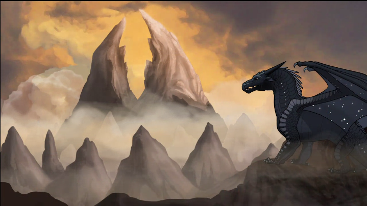

The Prophecies

The Dragonet Prophecy (Books 1-5)
When the war has lasted twenty years
the dragonets will come.
When the land is soaked in blood and tears
the dragonets will come.
Find the SeaWing egg of deepest blue,
Wings of night shall come to you.
The largest egg in mountain high,
will give to you the wings of sky.
For wings of earth, search through the mud
for an egg the color of dragon blood.
And hidden alone from the rival queens,
the SandWing egg awaits unseen.
Of three queens who blister and blaze and burn,
two shall die and one shall learn
if she bows to a fate that is stronger and higher,
she'll have the power of wings of fire.
Five eggs to hatch on brightest night,
five dragons born to end the fight.
Darkness will rise to bring the light.
The dragonets are coming...

The Jade Mountain Prophecy (Books 6-10)
Beware the darkness of dragons,
Beware the stalker of dreams,
Beware the talons of power and fire,
Beware one who is not what she seems.
Something is coming to shake the earth,
Something is coming to scorch the ground.
Jade Mountain will fall beneath thunder and ice
Unless the lost city of night can be found.

The Lost Continent Prophecy (Books 11-15)
Turn your eyes, your wings, your fire
To the land across the sea
Where dragons are poisoned and dragons are dying
And no one can ever be free.
A secret lurks inside their eggs.
A secret hides within their book.
A secret buried far below
May save those brave enough to look.
Open your hearts, your minds, your wings
To the dragons who flee from the Hive.
Face a great evil with talons united
Or none of the tribes will survive.